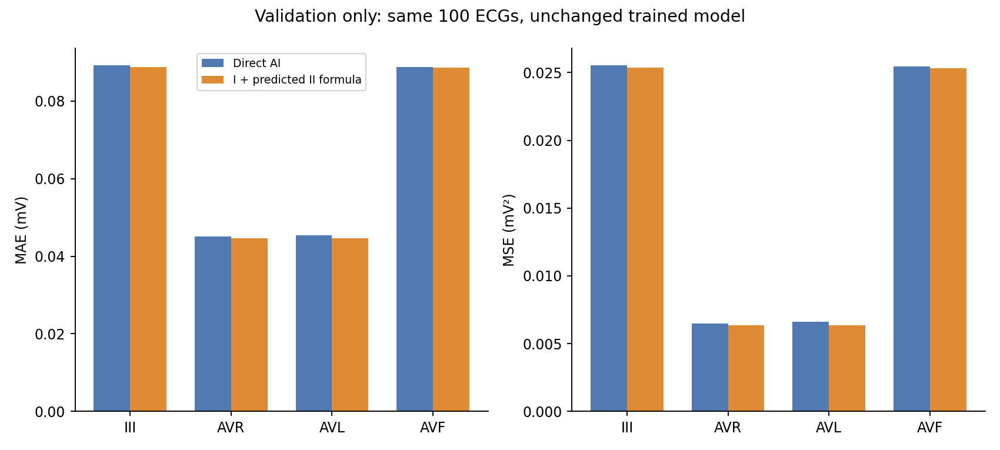
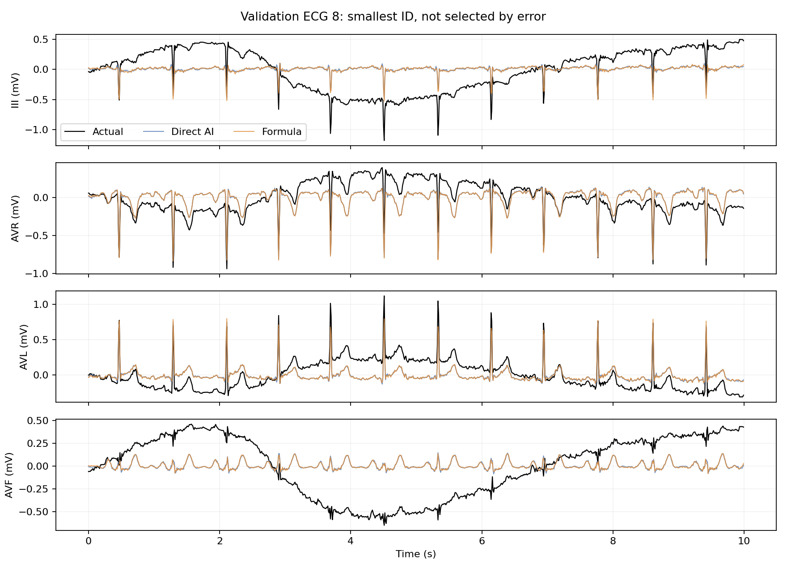

2026-11-01 · 검증 ECG 100개 · 새 학습 없음 · 기존 결과와 라벨 보존
평균 오차는 조금 줄었지만 효과는 작았습니다.
전체 11유도 MSE: 0.038420 → 0.038357 mV² (0.16% 감소). 기록별 53개 개선·47개 악화. 분류 성능은 아직 비교하지 않았습니다.
실제 I와 AI가 예측한 II로 III=II−I, aVR=−(I+II)/2, aVL=I−II/2, aVF=II−I/2를 계산했습니다. II와 V1~V6는 그대로 유지했습니다. 실제 정답 II를 재구성에 넣지 않았습니다.

| scope | direct_MAE_mV | formula_MAE_mV | direct_MSE_mV2 | formula_MSE_mV2 | MSE_reduction_percent |
|---|---|---|---|---|---|
| III | 0.089247 | 0.088849 | 0.025542 | 0.025361 | 0.709928 |
| AVR | 0.045081 | 0.044612 | 0.006484 | 0.006361 | 1.908022 |
| AVL | 0.045441 | 0.044563 | 0.006605 | 0.006358 | 3.743271 |
| AVF | 0.088785 | 0.088661 | 0.025462 | 0.025320 | 0.559260 |
| ALL_11 | 0.093957 | 0.093787 | 0.038420 | 0.038357 | 0.164378 |
| DERIVED_4 | 0.067138 | 0.066671 | 0.016024 | 0.015850 | 1.083871 |
검증 데이터에서 가장 작은 ECG ID를 선택했습니다. 성능을 보고 고른 예시가 아닙니다.

총 16개(train 13 / validation 0 / test 3)를 원본 metadata와 대조했습니다. 일부 report에 정상 변이 또는 뚜렷한 병리 없음 표현이 있어, 혼합만으로 오류라고 단정할 수 없습니다. 원본 라벨을 유지하고 검토 목록으로 분리했습니다.
다중 라벨에서 NORM을 지울지는 목표와 원본을 검토해 결정해야 합니다. 현재 이진 분류는 이미 질환군이 있으면 비정상으로 처리합니다. 테스트 결과를 개선하기 위한 사후 라벨 변경으로 사용하지 않습니다.
| ecg_id | split | diagnostic_classes | scp_codes | report |
|---|---|---|---|---|
| 291 | train | CD;NORM | {'NORM': 80.0, 'IRBBB': 100.0, 'HVOLT': 0.0, 'SR': 0.0} | sinus rhythm. incomplete right bundle branch block, this is probably a normal variant. high v lead voltages are probably normal for age. |
| 236 | train | CD;NORM | {'NORM': 80.0, 'IRBBB': 100.0, 'SR': 0.0} | sinusrhythmus unvollstÄndiger rechtsschenkelblock sonst normales ekg |
| 362 | train | CD;NORM | {'NORM': 100.0, 'IRBBB': 100.0, 'SARRH': 0.0} | sinus arrhythmie rechtsschenkelblock |
| 882 | train | NORM;STTC | {'NORM': 100.0, 'PAC': 0.0, 'NST_': 0.0, 'SR': 0.0} | premature atrial contraction(s). sinus rhythm. possible chaotic atrial rhythm, this is most commonly associated with chronic respiratory disease. minor non-specific st-t wave changes in inferior leads. |
| 1137 | train | NORM;STTC | {'NORM': 100.0, 'NST_': 0.0, 'SR': 0.0} | sinus rhythm. minor non-specific st-t wave changes in v5,6. |
| 235 | train | CD;NORM | {'NORM': 100.0, 'LAFB': 100.0, 'SBRAD': 0.0} | sinusbradykardie ueberdrehter linkstyp r-s #bergang in v ableitungen nach rechts verschoben lahb hohe, spitze t in v2-5 |
| 586 | train | CD;NORM | {'NORM': 80.0, 'IRBBB': 100.0, 'SR': 0.0} | sinusrhythmus lagetyp normal unvollstÄndiger rechtsschenkelblock sonst normales ekg |
| 709 | train | CD;NORM | {'NORM': 50.0, 'IRBBB': 100.0, 'SR': 0.0} | sinus rhythm. incomplete right bundle branch block, this is probably a normal variant. otherwise normal ecg. |
| 420 | train | CD;NORM | {'NORM': 100.0, 'IRBBB': 100.0, 'LOWT': 0.0, 'SR': 0.0} | sinus rhythm. incomplete right bundle branch block, this is probably a normal variant. t waves are low in ii and inverted in iii, avf. this may be normal but inferior myocardial ischaemia cannot be entirely excluded. suggest repeat if clinically indica |
| 648 | train | CD;NORM | {'NORM': 80.0, 'IRBBB': 100.0, 'NT_': 0.0, 'SR': 0.0} | sinus rhythm. incomplete right bundle branch block. minor non-specific t wave flattening. |
| 1042 | train | CD;NORM | {'NORM': 80.0, 'IVCD': 100.0, 'SR': 0.0} | sinus rhythm. non-specific intraventricular delay. no definite pathology. |
| 1149 | train | CD;NORM | {'NORM': 100.0, 'IRBBB': 100.0, 'SR': 0.0} | sinus rhythm. no definite pathology. |
| 770 | train | CD;NORM | {'NORM': 80.0, 'IRBBB': 100.0, 'SR': 0.0} | sinusrhythmus linkstyp unvollstÄndiger rechtsschenkelblock sonst normales ekg |
| 218 | test | CD;NORM | {'NORM': 80.0, '1AVB': 100.0, 'SR': 0.0} | sinusrhythmus lagetyp normal av-block 1.grades pathologisch |
| 478 | test | CD;NORM | {'NORM': 80.0, 'IRBBB': 100.0, 'SARRH': 0.0} | sinus arrhythmia. incomplete right bundle branch block, this is probably a normal variant. otherwise normal ecg. |
| 726 | test | CD;NORM | {'NORM': 100.0, 'IRBBB': 100.0, 'LAFB': 100.0, 'SR': 0.0} | sinus rhythm. incomplete right bundle branch block. otherwise normal ecg. Edit: NORM 50, IRBBB, (NORM 100, IRBBB, LAFB) |
검증 결과를 팀과 공유하고 공식 방식의 추가 실험 여부를 정합니다. 7개 출력만 학습하는 모델은 이번에 실행하지 않았습니다. 분류 실험도 다시 실행하지 않았습니다.